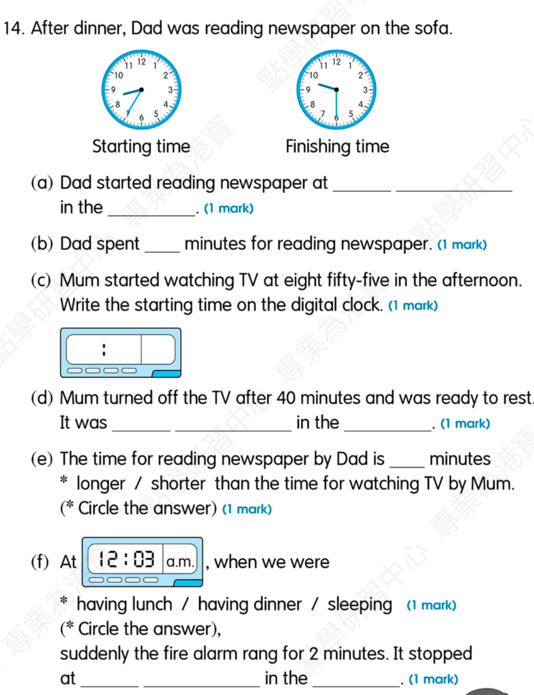
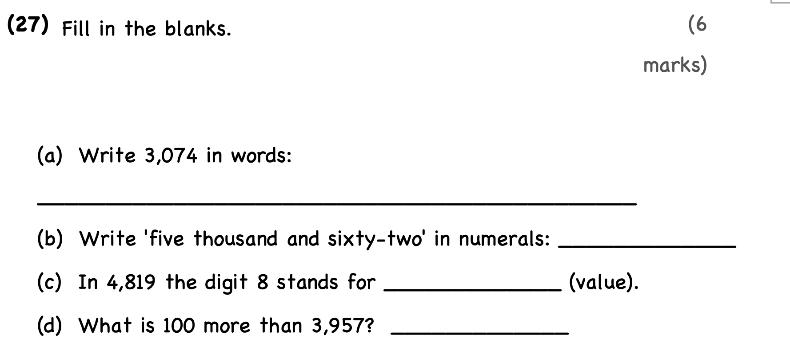

they (go) to the playground
Answer:
已掌握
| # | 中文意思 | 例句/提示 | 英文默写 | 已掌握 |
|---|---|---|---|---|
| noun 名词 | ||||
| 1 | 网站 | The school has news. | ||
| 2 | 制服 | He wears a school . | ||
| 3 | 周三 | My piano lesson is on . | ||
| 4 | 晚饭 | We eat at home. | ||
| 5 | 医生 | The checked my temperature. | ||
| verb 动词 | ||||
| 6 | 吃饭 | We together every evening. | ||
| adjective 形容词 | ||||
| 7 | 著名的 | This is a place. | ||
| 8 | 不礼貌的 | It is to shout. | ||
| 9 | 口渴的 | I am after running. | ||
| 10 | 不同的 | Our bags are colours. | ||
| adjective/adverb 形容词/副词 | ||||
| 11 | 早的；早地 | I get up . | ||
| possessive adjective 物主代词 | ||||
| 12 | 他们的 | bags are blue. | ||
| verb phrase 动词短语 | ||||
| 13 | 去博物馆 | We with our teacher. | ||
| conjunction 连词 | ||||
| 14 | 因为 | I stay home it is raining. | ||
| uncategorized 未分类 | ||||
| 15 | 打扫 | Please the floor. | ||
| 16 | 见面 | Let's at the school gate. | ||
| 17 | 借用 | May I your pencil? | ||
| 18 | 盒子 | Put your pencils in the . | ||
| 19 | 办公室 | The teacher is in her . | ||
| 20 | 通知 | A on the door says the library is closed. | ||
| # | 单词/词组 | 中文意思 | 例句/说明 | 已掌握 |
|---|---|---|---|---|
| adjective 形容词 | ||||
| 1 | cuddly | The toy bear is very cuddly. | ||
| 2 | dangerous | The road is dangerous. | ||
| 3 | sad | I feel sad because I miss my friends. | ||
| noun 名词 | ||||
| 4 | soup | The soup is hot. | ||
| 5 | fish | I can see a fish in the water. | ||
| 6 | packet | I bought a packet of biscuits. | ||
| 7 | advert | I saw an advert for a new toy. | ||
| 8 | parrot | The parrot can talk. | ||
| 9 | mistake | I made a mistake. | ||
| 10 | interviewer | The interviewer asks questions. | ||
| 11 | adventure | The story is a fun adventure. | ||
| 12 | workplace | A school is a teacher's workplace. | ||
| 13 | phrases | These phrases are easy to remember. | ||
| 14 | spelling | I checked the spelling of the word. | ||
| noun phrase 名词短语 | ||||
| 15 | board game | We play a board game after school. | ||
| 16 | General Studies | Some pupils like General Studies. | ||
| verb 动词 | ||||
| 17 | match | Please match each word to the correct picture. | ||
| 18 | knock | Please knock on the door before you come in. | ||
| 19 | put | Please put the vegetables into the pot. | ||
| phrase 短语 | ||||
| 20 | magic tricks | The magician showed us some magic tricks. | ||
| verb phrase 动词短语 | ||||
| 21 | fly a kite | We can fly a kite in the country park. | ||
| 22 | pick fruit | We pick fruit in the fruit fields. | ||
| 23 | playing board games | We like playing board games. | ||
| number 数词 | ||||
| 24 | million | One million is 1,000,000. | ||
| uncategorized 未分类 | ||||
| 25 | solve | We can solve this problem together. | ||
| 26 | lucky | I was lucky to find my lost key. | ||
| 27 | concert | We went to a concert last night. | ||
| 28 | passage | Read the passage and answer the questions. | ||
| 29 | improvement | There is an improvement in my handwriting. | ||
| 30 | cartoon | We watched a funny cartoon. | ||
| # | 中文意思 | 例句/提示 | 英文默写 | 已掌握 |
|---|---|---|---|---|
| time/date 时间日期 | ||||
| 1 | 十二月 | is the twelfth month. | ||
| 2 | 星期二 | is a weekday. | ||
| time unit 时间单位 | ||||
| 3 | 周 | A has 7 days. | ||
| directions 方向 | ||||
| 4 | 北 | is a direction. | ||
| numbers 数字 | ||||
| 5 | 2 | is 2. | ||
| 6 | 3 | is 3. | ||
| 7 | 4 | is 4. | ||
| 8 | 6 | is 6. | ||
| 9 | 7 | is 7. | ||
| 10 | 11 | is 11. | ||
| 11 | 50 | is 50. | ||
| solid shape 立体图形 | ||||
| 12 | 四棱锥 | A has one quadrilateral base and four triangular side faces. | ||
| 13 | 圆锥 | A has one curved face. | ||
| 14 | 圆柱 | A has two circular faces. | ||
| geometry 几何 | ||||
| 15 | 锐角 | An is smaller than a right angle. | ||
| # | 单词/词组 | 中文意思 | 例句/说明 | 已掌握 |
|---|---|---|---|---|
| operations 运算 | ||||
| 1 | altogether | How many are there altogether? | ||
| 2 | borrowing | Borrowing helps when we subtract. | ||
| geometry 几何 | ||||
| 3 | angle | An angle is formed by two rays with the same endpoint. | ||
| 4 | perpendicular | Perpendicular lines meet at a right angle. | ||
| 5 | acute angle | An acute angle is smaller than a right angle. | ||
| 6 | grid | A grid helps us find positions. | ||
| 7 | opposite side | In a rectangle, the opposite sides are equal. | ||
| 8 | adjacent side | These are adjacent sides. | ||
| question word 题目词 | ||||
| 9 | calculate | Calculate the answer. | ||
| place value 位值 | ||||
| 10 | tens | The digit is in the tens place. | ||
| comparison 比较 | ||||
| 11 | fewer | There are fewer apples in this box. | ||
| 12 | least | Which number is the least? | ||
| time/date 时间日期 | ||||
| 13 | leap year | A leap year has 366 days. | ||
| 14 | minute hand | At three o'clock, the minute hand points to 12. | ||
| position 位置 | ||||
| 15 | front | The door is at the front of the room. | ||
| 16 | back | The desk is at the back of the room. | ||
| operations calculation 运算 | ||||
| 17 | difference | The difference is the answer in subtraction. | ||
| 18 | A times B | A times B means multiplication. | ||
| 19 | subtract A from B | "Subtract A from B" means B - A. | ||
| 20 | mixed operations | Mixed operations use more than one operation. | ||
| 21 | equally | Share the apples equally. | ||
| 22 | quotient | The quotient is the answer in division. | ||
| 23 | horizontal form | Write it in horizontal form. | ||
| teacher math vocabulary 老师数学词汇 | ||||
| 24 | stop | Stop counting when you reach twenty. | ||
| currency money 货币 | ||||
| 25 | dollar | One dollar has 100 cents. | ||
| 26 | cent | One cent is a small amount of money. | ||
| 27 | coin | The coin is round. | ||
| measurement 测量 | ||||
| 28 | metre | A metre is 100 centimetres. | ||
| directions tool 方向工具 | ||||
| 29 | compass | A compass shows directions. | ||
| 句型结构 | ||||
| 30 | Angle ... is smaller than Angle ... | Angle A is smaller than Angle B. | ||



